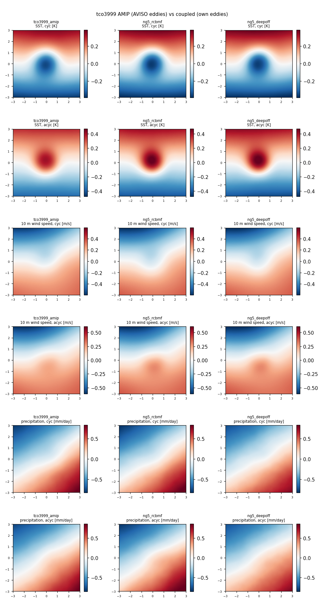
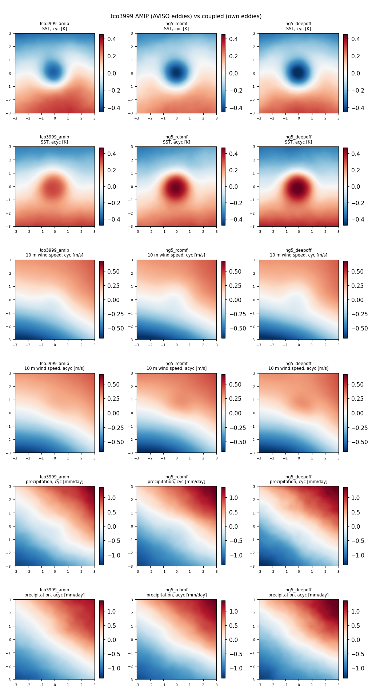

Composites in the same style as the earlier IFS-FESOM ones (eddy-centric, scaled to the radius, rotated to the mean wind) for five simulations, using daily means on a 0.25° grid. This page collects what was checked and decided along the way, and is updated as results arrive.
| Run | Tracks | Cyclonic | Anticyclonic | Composites | zarr |
|---|---|---|---|---|---|
| tco2559 v20240901 (deep-on) | AVISO | 26,313 | 24,874 | complete | verified |
| tco2559 v20250101 (RCBMF) | AVISO | 60,807 | 57,418 | complete | verified |
| tco3999 AMIP | AVISO | 60,807 | 57,418 | complete | verified |
| Coupled tco3999 RCBMF | own, py-eddy-tracker | 51,884 | 49,433 | complete | verified |
| Coupled tco3999 deep-off | own, py-eddy-tracker | 51,397 | 49,182 | complete | verified |
Every 10th day from 2020-01-01, both eddy kinds, Southern Ocean box (60°S–25°S). All 382 tasks finished with exit code 0 and no errors. The AMIP counts equal the number of AVISO observations in the box on those dates exactly. All ten zarr stores are verified (store obs = file count, no bad files, ids unique). Evaluation below, then the Gulf Stream box.
Both AVISO META3.2 files run from 1993-01-01 to 2022-02-09 and hold about 1.27M cyclonic and 1.20M anticyclonic observations in each of 2020 and 2021. The simulations span 2020-01-01 to 2021-03-01, so the AMIP-type runs use them directly.
Yes, in every case tested. Each 0.25° field was compared with the matching HEALPix field over a 20°×20° Southern Ocean box, as (C) a conservative area average of the fine cells and (N) the single nearest fine cell, which is what point sampling or bilinear remapping returns. Precipitation is the noisiest field and separates the two best.
| Pair (precipitation) | Correlation with C | Correlation with N | p99.9 vs C | p99.9 vs N |
|---|---|---|---|---|
| tco2559 daily vs zoom 10 | 1.004 | 0.934 | ||
| tco3999 AMIP hourly vs H2048 | 0.987 | 0.955 | ||
| Coupled RCBMF hourly vs H2048 | 1.006 | 0.741 | ||
| Coupled deep-off hourly vs H2048 | 1.027 | 0.661 |
Point sampling would clip the heaviest precipitation by 25–35% in the coupled runs; the products do not. Temperature, wind and column water agree with C even more closely (correlation ≥ 0.9997). Consequence: the 0.25° products are used for all five runs, with no detour through H2048.
tprate istprate is the true daily mean here.tp or flux accumulations stamped 01:00–24:00, divided by 86400 s.Hourly tprate is an instantaneous rate: against tp/3600 the correlation is only 0.75–0.80 (means agree within 3%), so hourly tp is used instead. The 0.25° and HEALPix products share one time stamp convention for tp (correlation 0.9995–0.9999 at the same stamp, 0.4–0.8 an hour off).
Pilot cross-check on 2020-01-21, whole globe: tco3999 AMIP daily means built from hourly data against the native tco2559 daily means (different runs, same date).
| Variable | tco3999 (built) | tco2559 (native) |
|---|---|---|
| Net surface shortwave, W m⁻² | 130.7 | 130.7 |
| Net top thermal, W m⁻² | −221.5 | −222.2 |
| Latent heat flux, W m⁻² | −64.7 | −65.8 |
| Precipitation, 10⁻⁸ m s⁻¹ | 2.83 | 2.86 |
| 2 m temperature, K | 276.7 | 277.3 |
Sign, units and accumulation handling are consistent. The accumulation window and stamp were taken from the catalog text, not tested against the native daily files.
The coupled runs have their own ocean, so AVISO's eddies do not apply. Tracks were made with py-eddy-tracker on the daily ocean avg_zos (HEALPix zoom 9, the finest ocean level available), averaged onto the 0.25° grid. Settings follow the earlier EERIE model recipe: 700 km high-pass, 2 mm contour steps, 70% shape error; tracking with 4 virtual steps, tracks of at least 10 observations kept.
| Run | Cyclonic obs | Anticyclonic obs | SO obs per day (cyc / anti) |
|---|---|---|---|
| Coupled RCBMF | 1.29M | 1.17M | 1,208 / 1,153 |
| Coupled deep-off | 1.27M | 1.16M | 1,198 / 1,145 |
| AVISO (reference, 2020) | 1.27M | 1.20M | 1,414 cyclonic |
The model tracks have about 15% fewer observations per day than AVISO; median radius is 56 km (5–95%: 24–131 km). Ocean daily means are stamped at 00:00 from 2020-01-02 to 2021-03-01, which fits 425 simulated days only if each stamp is the end of its day. Fields are labelled with stamp minus one day to line up with the atmospheric daily means. This is inferred from the time axis, not verified. Global-mean sea surface height is about −0.0002 m, so no drift correction was needed.
Track longitudes run continuously across 0° (−27° to 363°), so the driver wraps them to 0–360 before applying the box.
AVISO's eddy longitudes are not confined to 0–360: they run from −47° to 368° because tracks stay continuous across the 0° meridian. The first driver version filtered the box with 0 < lon < 360 and so dropped 260 cyclonic and 322 anticyclonic eddies (0.5%) from each AMIP run, while the coupled runs, run after a fix that wraps longitudes, kept them. The file counts against the track-based totals exposed the gap. The AMIP tasks were rerun with the fixed driver (resumable, 2 minutes per chunk); all five runs now use the same selection.
| Run | Dates | Cyclonic eddies | Anticyclonic eddies |
|---|---|---|---|
| tco2559 v20240901 (6 months) | 19 | 26,313 | 24,874 |
| tco2559 v20250101, tco3999 AMIP (AVISO tracks) | 43 | 60,807 | 57,418 |
| Coupled RCBMF (own tracks) | 43 | 51,884 | 49,433 |
| Coupled deep-off (own tracks) | 43 | 51,397 | 49,182 |
These are observations, not unique eddies; long-lived eddies appear on several dates.
Centre anomaly (r < 0.5 R minus the eddy's outer ring, r > 2.5 R), mean ± track-clustered standard error; * = paired difference more than 2 SE from zero. Eddy radius median 51–56 km, mean latitude ≈ 43.5°S in all runs.
| Variable (cyc / acyc) | AMIP tco3999 | coupled RCBMF | coupled deep-off |
|---|---|---|---|
| SST [K] | −0.324 / +0.366 | −0.347 / +0.435 | −0.342 / +0.438 |
| 10 m wind speed [m/s] | −0.073 / +0.153 | −0.102 / +0.183 | −0.099 / +0.183 |
| Latent heat flux, down + [W/m²] | +6.7 / −8.1 | +7.3 / −9.6 | +7.5 / −10.0 |
| Boundary layer height [m] | −11.8 / +19.5 | −14.2 / +23.1 | −14.6 / +23.6 |
| Precipitation [mm/day] | −0.10 / +0.07 | −0.09 / +0.09 | −0.05 / +0.06 |
The maps (rotated to the mean wind, scaled by radius) show the expected structure: cold-core cyclones and warm-core anticyclones with a wind-speed dip/rise over the eddy; the AMIP and coupled composites look alike by eye, with the coupled SST core slightly stronger. The large-scale gradient across the box is the mean meridional gradient of the surrounding field, not an eddy effect.

Caveats: the ocean daily time-stamp offset (stamp minus one day) is inferred, not verified; the evaluation uses every 10th day only; deep-on covers 6 months.
Same method, box 82°W–20°W, 28°N–60°N, every 10 days. All 10 chunk jobs finished with exit 0, file counts match the logged per-date counts, and all ten zarr stores are verified. About 8 times fewer eddies than the Southern Ocean (≈2,100 tracks per kind in the AVISO runs), so errors are 3–4 times larger.
| Run | Cyclonic | Anticyclonic |
|---|---|---|
| tco2559 deep-on | 3,631 | 3,628 |
| tco2559 RCBMF, tco3999 AMIP | 7,935 | 7,888 |
| Coupled RCBMF | 7,650 | 7,228 |
| Coupled deep-off | 7,705 | 7,283 |
| Centre anomaly (cyc / acyc) | AMIP tco3999 | coupled RCBMF | coupled deep-off |
|---|---|---|---|
| SST [K] | −0.325 / +0.302 | −0.407 / +0.432 | −0.430 / +0.452 |
| 10 m wind speed [m/s] | −0.022 / +0.114 | −0.029 / +0.142 | −0.037 / +0.169 |
| Latent heat flux, down + [W/m²] | +9.3 / −8.3 | +10.5 / −11.0 | +11.0 / −11.2 |
| Boundary layer height [m] | −9.0 / +14.9 | −13.9 / +18.8 | −16.2 / +22.5 |
| Precipitation [mm/day] | −0.05 / +0.09 | −0.16 / +0.13 | +0.00 / +0.09 |
